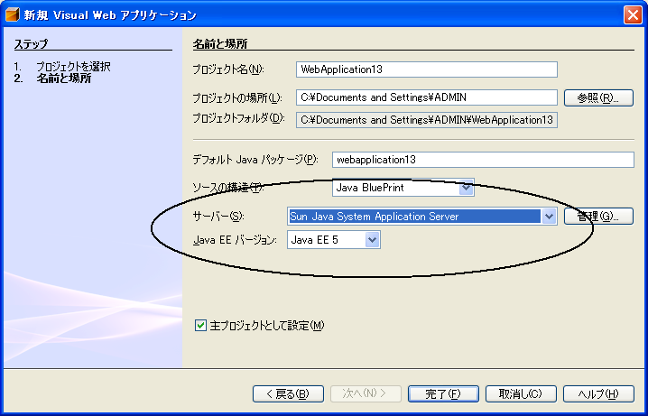

Visual Web Pack は、NetBeans IDE がサポートするすべてのアプリケーションサーバーおよびサーブレットコンテナとともに機能します。
Java EE 5 と JavaServer Faces 1.2 の制約
現時点では、Java EE 5 プラットフォームを使用する Visual Web アプリケーションをサポートするのは、Sun Java System Application Server 9 U1 (build 14) 以降だけです。異なるサーバーを使用する場合は、プロジェクトの作成時に J2EE 1.4 プラットフォームを選択してください。
付属の Travel データベース
チュートリアルとサンプルアプリケーションの多くで Travel データベースを使用します。Visual Web Pack をインストールする前に Sun Java System Application Server を IDE に登録していた場合、
Visual Web Pack のインストール時に、Sun Java System Application Server に付属の Java DB (Derby) サーバーに Travel データベースが追加されます。
Visual Web Pack をインストールしたあとに Sun Java System Application Server を IDE に登録した場合、IDE を再起動して、Travel データベースを有効にしてください。独自にインストールした Java DB または Apache Derby データベースサーバーに Travel データベースをインストールする方法については、「構成情報」の「Visual Web Pack のサンプルデータベース」を参照してください。
Technology Preview
NetBeans Visual Web Pack 5.5 の Technology Preview リリースをインストールしている場合は、Visual Web Pack の正式リリースをインストールする前に、「ソフトウェアのアンインストール」の説明に従って、Technology Preview リリースをアンインストールしてください。
NetBeans Visual Web Pack 5.5 Technology Preview に Blueprints AJAX コンポーネントをインストールしている場合は、Visual Web Pack の正式リリースをインストールする前に、それらのコンポーネントを手動でアンインストールしてください。IDE からコンポーネントライブラリを削除するには、次の手順に従います。
JDK 5.0 Update 6 以上がインストールされていないと、インストールを開始できません。この JDK は、「Java SE Downloads」ページからダウンロードできます。
Mac OS X のインストールでは、Java 2 Standard Edition (J2SE) 5.0 Release 4 が必要です。この JDK は、「Apple Downloads」ページからダウンロードできます。「J2SE」で検索して、このリリースを見つけてください。
Netbeans IDE がサポートする、いずれかのアプリケーションサーバーまたはサーブレットコンテナ。
注: Java EE 5 プラットフォームを使用する Visual Web アプリケーションを開発するには、Sun Java System Application Server 9 を使用する必要があります。詳細については、「Sun Java System Application Server」Web サイトを参照してください。
インストールの順序
NetBeans IDE と Sun Java System Application Server をそれぞれインストールしたあとに NetBeans Visual Web Pack をインストールする場合は、Visual Web Pack をインストールする前に、アプリケーションサーバーを構成すると、付属の Travel データベースがインストール後すぐに使用できるようになります。Visual Web Pack をインストールしたあとでアプリケーションサーバーを構成する場合は、IDE を再起動しないと、「実行時」ウィンドウで Travel データベースを使用できません。
注意: Sun Java System Application Server をインストールしている場合は、Visual Web Pack をインストールする前に、「Sun Java System Application Server の構成」の説明に従って、NetBeans IDE でアプリケーションサーバーを構成してください。これにより、Visual Web Pack インストーラは、Application Server に付属の Java DB データベースにサンプルの Travel スキーマをインストールできるようになります。Visual Web Pack にアプリケーションサーバーは必要ありませんが、Visual Web Pack プロジェクトは、アプリケーションサーバーに配備されます。
重要: NetBeans Visual Web Pack 5.5 の Technology Preview リリースをインストールしている場合は、Visual Web Pack の正式リリースをインストールする前に、「ソフトウェアのアンインストール」の説明に従って、Technology Preview リリースをアンインストールしてください。
Microsoft Windows
Microsoft Windows プラットフォームで NetBeans Visual Web Pack 5.5 をインストールする方法を次に示します。
デフォルトのプロジェクトディレクトリは、C:\Documents and Settings\<ユーザー名> です。NetBeans Visual Web Pack をアンインストールしても、このディレクトリは削除されず、Visual Web Pack を次回インストールしたときにもプロジェクトディレクトリとして認識されます。
Visual Web Pack をアンインストールするには、後述の「ソフトウェアのアンインストール」の手順に従ってください。
構成情報
このトピックでは、Sun Java System Application Server を IDE で使用できるようにする方法、一部のアプリケーションとチュートリアルで使用するサンプルの Travel データベースにアクセスする方法、および Visual Web プロジェクトの構成方法について説明します。
Sun Java System Application Server を付属する NetBeans IDE をインストールしている場合、Application Server はすでに IDE に登録されているので、Application Server を構成する必要はありません。Sun Java System Application Server を個別にダウンロードしてインストールしている場合は、Application Server を IDE が使用できるように IDE を構成してください。Visual Web Pack をインストールする前に Application Server を構成するのが最適です。
個別にインストールした Application Server を構成するには、次の手順に従います。
NetBeans IDE と Sun Java System Application Server をインストールしたあと、NetBeans IDE を起動します。
Visual Web Pack をインストールすると、サンプルの Travel データベースが、次の表に示すように Sun Java System Application Server に付属の Java DB データベースとして使用可能になります。Travel データベースは、一部のサンプルアプリケーションとチュートリアルで必要になります。Visual Web Pack のインストール前に、Sun Java System Application Server を IDE に登録した場合は、インストール後「実行時」ウィンドウから Travel データベースを使用できるようになります。Visual Web Pack をインストールしたあとに Sun Java System Application Server を IDE に登録した場合は、IDE を再起動しないと「実行時」ウィンドウに Travel データベースは表示されません。
Visual Web プロジェクトを作成する場合、次の図に示すように、「新規 Visual Web アプリケーション」ウィザードを使用して、そのプロジェクトのサーバーと Java EE のバージョンを設定できます。

図 1:「新規プロジェクト」ウィザード
JavaServer Faces 1.2 コンポーネントを使用する場合は、「Java EE バージョン」を「Java EE 5」に設定します。Java EE 5 プロジェクトをサポートするテスト済みのサーバーは、現在は Sun Java System Application Server 9 だけです。新規プロジェクトの作成に使用できる設定の詳細については、Visual Web Pack オンラインヘルプのトピック「新規 Visual Web アプリケーションウィザード」を参照してください。
Visual Web Pack の各チュートリアルでは、最初に次のような表が示され、そのチュートリアルで使用するリソースが示されます。
アプリケーションサーバー
Sun Java System Application Server 9 Tomcat JBoss BEA WebLogic
JavaServer Faces コンポーネント/Java EE プラットフォーム:
「Java EE 5」をプラットフォームに選択した場合、コンポーネントパレットには、JavaServer Faces 1.2 コンポーネントが含まれます。「J2EE 1.4」をプラットフォームに選択した場合、コンポーネントパレットには、JavaServer Faces 1.1 コンポーネントが含まれます。
Travel データベース:「必要」と表示されている場合は、チュートリアルを完了するのに Travel データベースが必要です。Travel データベースの詳細については、前述の「Visual Web Pack のサンプルデータベース」の節を参照してください。
Sun Java System Application Server 以外のサーバーとともに Travel データベースを使用するには、derbyclient.jar をプロジェクトに追加するか、サーバーのライブラリディレクトリにコピーする必要があります。たとえば、Travel データベースを Tomcat とともに使用する場合は、derbyclient.jar ファイルを <Visual Web Pack をインストールした NetBeans のインストール場所>\enterprise3\apache-tomcat-5.5.17\common\lib にコピーします。derbyclient.jar のコピーは、<Application Server のインストール場所>\javadb\lib\derbyclient.jar にあります。
JRE がインストールおよび指定されているにもかかわらず、「JRE not found」というエラーが表示され、Solaris でのインストールが異常終了する。
説明: -is:tempdir <相対パスの一時ディレクトリ> オプションを指定して、インストーラを起動すると次のようなエラーメッセージが表示される。 This application requires a Java Run Time Environment (JRE) to run. Searching for one on your computer was not successful. Please use the command line switch -is:javahome to specify a valid JRE. For more help use the option -is:help.